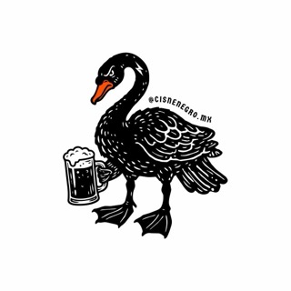

Fase 2 · Informe de presencia digital · Pachuca, Hgo.
Cervecería
Cisne Negro
La reputación es muy buena ( ★ en Google) y el contenido de eventos funciona. Lo que falla es todo lo que rodea a la marca: datos que se contradicen entre canales, ninguna reseña respondida y canales abandonados. Este informe mide cada canal con datos públicos y prioriza qué corregir primero.

01 · Resumen ejecutivo
Buena cerveza, señal débil
Los 5 hallazgos más fuertes
Score de presencia digital
Promedio simple de los seis canales. Cada canal se califica de 0 a 100 en cinco dimensiones de 20 puntos: 20 = cumple, 10 = parcial, 0 = no cumple o no es verificable sin iniciar sesión (lo que un cliente no puede ver no cuenta). Toca un canal para ver de dónde sale cada punto.
Ver la rúbrica completa
02 · Rendimiento de contenido en Instagram
Los eventos mueven la cuenta
Se analizaron de publicaciones (nov 2023 – sep 2026). La interacción es likes + comentarios, porque Instagram no publica alcance, guardados ni compartidos sin acceso a Insights.
Interacción por formato
Mediana de likes + comentarios por publicación
Ver datos en tabla
Interacción por tema
Interacción relativa al post típico de su año (×1.0 = la mediana del año)
Ver datos en tabla
Publicaciones por mes
Noviembre 2023 a septiembre 2026 · los meses en cero se muestran
Ver datos en tabla
Mejor día y hora para publicar
Hora de CDMX (UTC−6) · cada celda: interacción relativa mediana y número de posts
Ver datos en tabla
Top 10 publicaciones
03 · TikTok
Un viral y luego silencio
Vistas por video
Las 14 publicaciones de la cuenta, en orden cronológico
Ver datos en tabla
04 · Voz del cliente en Google
Les gusta, y nadie les contesta
Distribución de estrellas
Reseñas de Google por calificación
Ver datos en tabla
Evolución por año
Promedio de estrellas de las reseñas publicadas cada año
Ver datos en tabla
Lo que elogian
Menciones positivas en las reseñas con texto
De qué se quejan
Menciones negativas en las mismas reseñas
05 · Consistencia de datos (NAP)
Siete canales, cuatro versiones
NAP es nombre, dirección y teléfono, más el horario. Si los canales se contradicen, Google pierde confianza en la ficha y el cliente llega en lunes o marca un número que no existe. El horario correcto es Mar–Jue 16–22 · Vie–Sáb 16–23:30 · Dom 14–19 · Lun cerrado y el teléfono, (771) 244-2025.
06 · Benchmark local
Contra las cervecerías de Hidalgo
Las tres que La Silla Rota destacó junto a Cisne Negro en junio de 2026. Solo datos públicos verificables. Cuando un dato no se pudo confirmar se marca s/d.
07 · SEO local
"Cisne negro" ya tiene dueño
Buscar "cisne negro" es competir con una película ganadora del Óscar, una teoría económica famosa y un ave. La marca no puede ganar esa búsqueda y tampoco lo necesita: tiene que ganar las búsquedas de intención local, las de alguien que quiere tomarse una cerveza en Pachuca.
Prueba 1 · ""
La cervecería no aparece. Los resultados son:
Prueba 2 · ""
El sitio propio no aparece; la marca solo sale citada en notas de prensa. Los resultados son:
Palabras clave objetivo
Siempre unidas a la ciudad. Hay que validar el volumen en Search Console cuando el cliente dé acceso.
Ficha y sitio
- Categoría de Google: hoy es solo "". Conviene una categoría principal de cervecería o brewpub y dejar Restaurante y Bar como secundarias (validar el nombre exacto en el selector del Perfil de Empresa).
- Nombre: la ficha dice "". Debe decir "Cervecería Cisne Negro", que es el nombre real del negocio y el que usa Instagram.
- Sitio: el título es "" y la meta description está vacía. Propuesta: Cervecería Cisne Negro | Cerveza artesanal en Pachuca, más schema Brewery y Restaurant con horario estructurado.
- Untappd: en la prueba 2, el primer resultado es un perfil de Untappd de otra cervecería. Un perfil propio es la vía más barata de aparecer.
08 · Recomendaciones priorizadas
Qué hacer primero
Ordenadas por impacto entre esfuerzo. Las naranjas son ganancias rápidas: alto impacto, poco esfuerzo y casi todas sin costo. Están alineadas con la propuesta de marca y presencia digital.